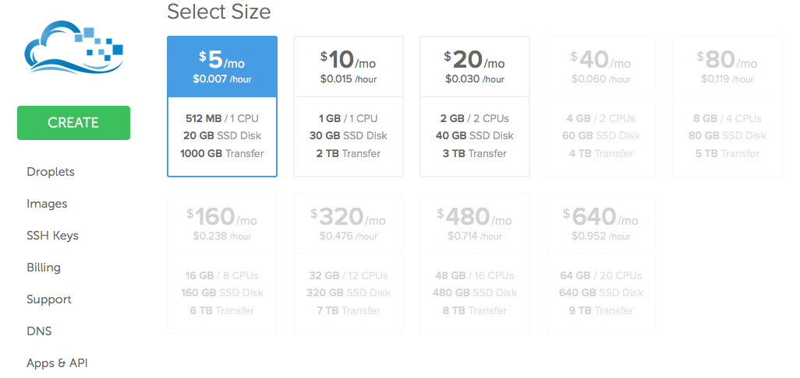
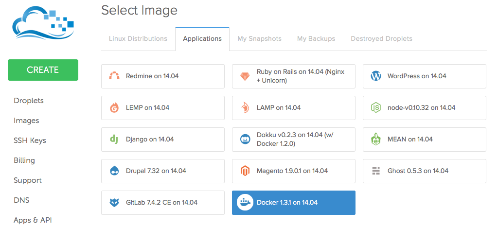
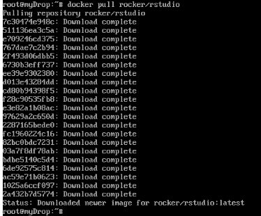
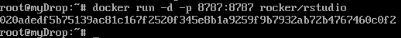

Cloud hosting Rstudio with Docker and DigitalOcean
Here's a how-to for deploying Rstudio using Docker and hosting on DigitalOcean. It's a pretty painless process, but nonobvious if you've never used Docker before, so I thought I'd write everything down for my own sake. By way of a bit of background, DigitalOcean is cloud hosting service where you can deploy web apps for a less than a cent an hour. Docker is an increasingly popular way of packaging up all the code, libraries, and dependencies that you need for some particular purpose to make things portable across systems. We're going to use these to cloud-host Rstudio.
First, we'll make an account at DigitalOcean. Setting up an account is simple, just click along and follow the instructions. You'll need to put a few bucks of credit into your account at first, or you can get some free credit if you're a student. Then we'll need to set up a 'droplet', which is just a fixed set of computing resources that you're essentially renting from DigitalOcean. At this point, we'll have to choose how much computing power we intend to need.
The cheapest option gets you half a GB of RAM and will cost you $.007/hour. Something comparable to a laptop will cost you about a dime per hour. If you really want to do some number crunching, you can get 64GB of RAM and 20 cores for less than a dollar an hour. So you could spin up a powerful droplet, do some pretty interesting datascience for a few hours, and then destroy the droplet, all for only a few bucks. Seems like you could play that game for a long time before you came anywhere near the cost of high-performance personal computer.
After you've picked one (presumably the cheap one like I did), pick which flavor of Linux is your favorite. Then go over to the Applications tab and make sure you select Docker.
There's more things to configure, but that's all you need for now. Create the droplet and wait about one minute for everything to get set up. Once things are running, click on the Access tab and go to Console Access. By this time, you should have gotten an email from DigitalOcean with a temporary password for this droplet. In the console, login with 'root' as the user and whatever password they sent you (which you will then have to promptly change).
Now onto Docker. At this point, you'd really benefit from taking 2 minutes and checking out this quick Docker tutorial. This will give a basic understanding the concepts and commands underlying Docker, and they explain it better than I could. The principle idea is that we're going to obtain and then use 'Docker images' and then run various commands atop the context of a Docker image, which is a container some reusable code.
At this point, we could begin to install R and all the dependecies and save our setup to an image with Docker commit. But in the case of R and Rstudio, such stable images have already been made thanks to the awesome Rocker Project from @eddelbuettel and @cboettig. These images (amongst many others) are hosted in the Docker Hub and we can pull them down easily for our use. So we'll use images from the Hub,
docker pull rocker/rstudio
This image will be pulled and all the dependencies will be in your droplet.
We're now going to use this image to deploy Rstudio Server.
docker run -d -p 8787:8787 rocker/rstudio
This deploys Rstudio server on port 8787 and with the default username/password of rstudio/rstudio and returns a lengthy ID key for the container we created. Below the droplet console, you'll see the IP address of your droplet, for example 104.131.62.8, so if you point a browser to 104.131.62.8:8787, you can log into an Rstudio session.
Since we're deploying Rstudio, we'll probably want to add some extra security with our own username and password.
docker run -d -p 8787:8787 -e USERNAME=someusername -e PASSWORD=somepassword rocker/rstudio
And there we have, rather effortlessly, set up Rstudio Server so we can do our number crunching from a web brower.